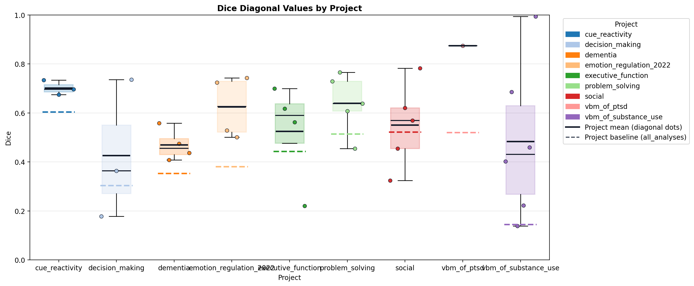
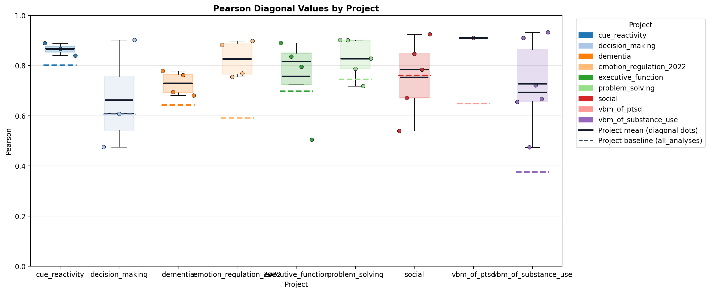
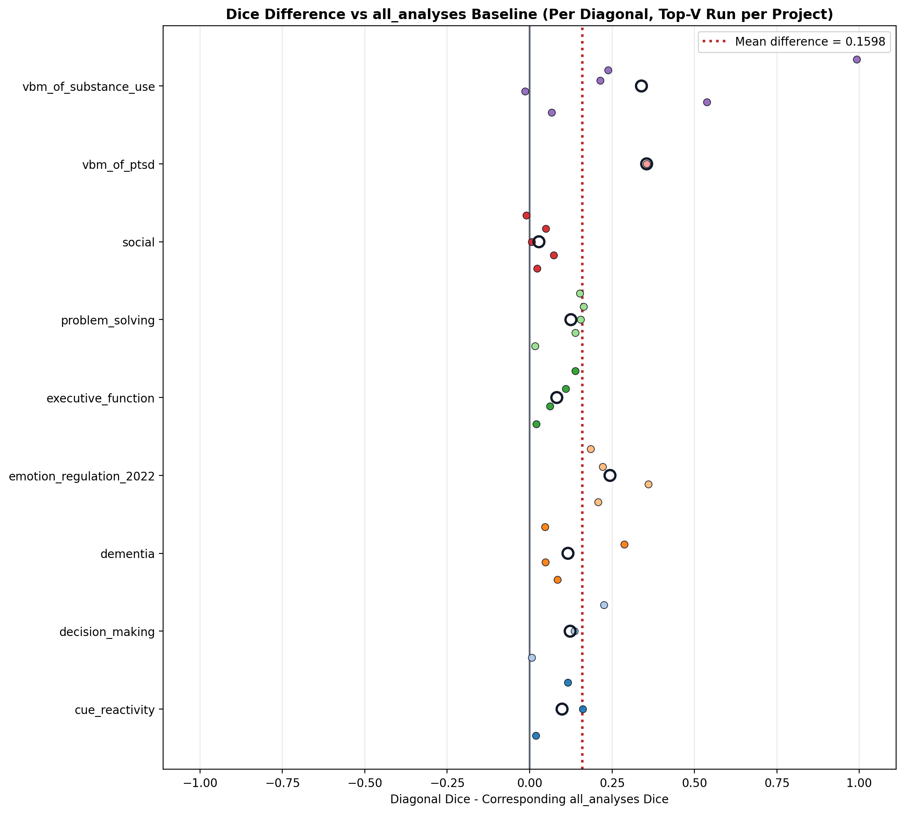
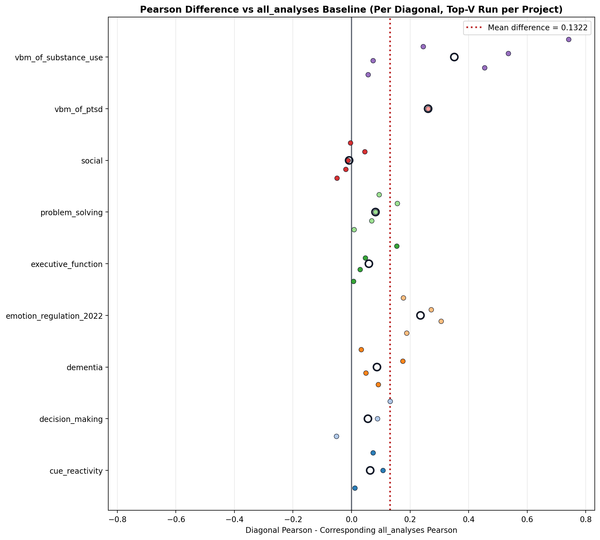
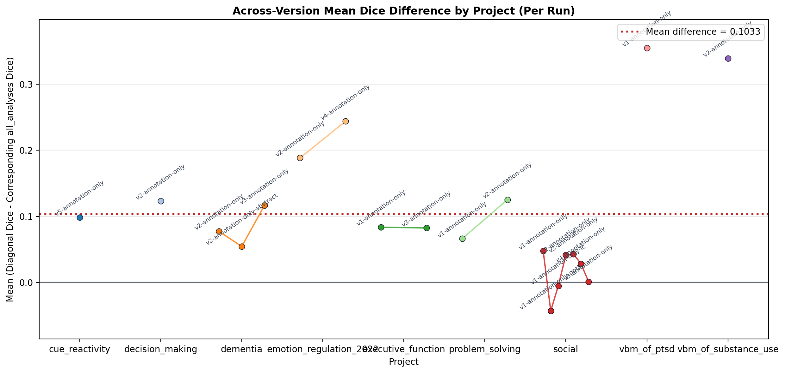
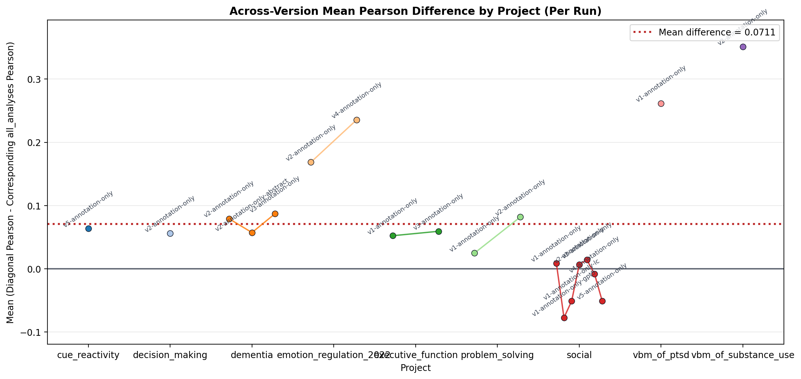

Generated at 2026-08-28T03:36:07.030508Z.
| Project | Status | Reason | Eligible Runs | Fair IDs | Manual Meta | Compare | Project Report | Compare Log |
|---|---|---|---|---|---|---|---|---|
| cue_reactivity | success | completed | 1 | 148 | cached | success | manual_vs_auto_meta_report.html | compare log |
| decision_making | success | completed | 1 | 59 | cached | success | manual_vs_auto_meta_report.html | compare log |
| dementia | success | completed | 3 | 39 | cached | success | manual_vs_auto_meta_report.html | compare log |
| emotion_regulation_2022 | success | completed | 2 | 48 | cached | success | manual_vs_auto_meta_report.html | compare log |
| executive_function | success | completed | 2 | 81 | cached | success | manual_vs_auto_meta_report.html | compare log |
| problem_solving | success | completed | 2 | 81 | cached | success | manual_vs_auto_meta_report.html | compare log |
| social | success | completed | 7 | 153 | cached | success | manual_vs_auto_meta_report.html | compare log |
| template_ | skipped | template project is not a real run target | 0 | 0 | not_run | not_run | missing | missing |
| vbm_of_ptsd | success | completed | 1 | 10 | cached | success | manual_vs_auto_meta_report.html | compare log |
| vbm_of_substance_use | success | completed | 1 | 56 | cached | success | manual_vs_auto_meta_report.html | compare log |
| Project | Run | Dice Mean Diagonal | Pearson Mean Diagonal | Dice Baseline (all_analyses) | Pearson Baseline (all_analyses) | Dice Mean Off-Diagonal | Pearson Mean Off-Diagonal | N Rows | N Cols |
|---|---|---|---|---|---|---|---|---|---|
| cue_reactivity | v5-annotation-only | 0.7020 | 0.8652 | 0.6035 | 0.8014 | 0.5621 | 0.7523 | 6 | 3 |
| decision_making | v2-annotation-only | 0.4263 | 0.6620 | 0.3033 | 0.6059 | 0.2414 | 0.4829 | 6 | 3 |
| dementia | v2-annotation-only | 0.4313 | 0.7221 | 0.3541 | 0.6429 | 0.3606 | 0.6344 | 5 | 4 |
| dementia | v2-annotation-only-abstract | 0.4085 | 0.7002 | 0.3541 | 0.6429 | 0.3569 | 0.6074 | 5 | 4 |
| dementia | v3-annotation-only | 0.4696 | 0.7292 | 0.3533 | 0.6422 | 0.3513 | 0.6428 | 5 | 4 |
| emotion_regulation_2022 | v2-annotation-only | 0.6035 | 0.7871 | 0.4150 | 0.6186 | 0.2539 | 0.3988 | 5 | 4 |
| emotion_regulation_2022 | v4-annotation-only | 0.6245 | 0.8262 | 0.3806 | 0.5906 | 0.2969 | 0.4676 | 7 | 4 |
| executive_function | v1-annotation-only | 0.5268 | 0.7509 | 0.4433 | 0.6986 | 0.3629 | 0.5673 | 5 | 4 |
| executive_function | v3-annotation-only | 0.5249 | 0.7569 | 0.4424 | 0.6975 | 0.3589 | 0.5700 | 5 | 4 |
| problem_solving | v1-annotation-only | 0.5779 | 0.7692 | 0.5118 | 0.7443 | 0.4660 | 0.6691 | 8 | 5 |
| problem_solving | v2-annotation-only | 0.6392 | 0.8274 | 0.5139 | 0.7455 | 0.4727 | 0.6742 | 8 | 5 |
| social | v1-annotation-only | 0.5708 | 0.7684 | 0.5231 | 0.7594 | 0.4468 | 0.6700 | 8 | 5 |
| social | v1-annotation-only-gpt5 | 0.4833 | 0.6854 | 0.5264 | 0.7626 | 0.4061 | 0.6349 | 8 | 5 |
| social | v1-annotation-only-lc | 0.5200 | 0.7083 | 0.5250 | 0.7593 | 0.4160 | 0.6388 | 8 | 5 |
| social | v2-annotation-only | 0.5635 | 0.7661 | 0.5221 | 0.7594 | 0.4476 | 0.6801 | 8 | 5 |
| social | v3-annotation-only | 0.5688 | 0.7725 | 0.5258 | 0.7582 | 0.4625 | 0.6947 | 8 | 5 |
| social | v4-annotation-only | 0.5503 | 0.7532 | 0.5220 | 0.7614 | 0.4512 | 0.6751 | 8 | 5 |
| social | v5-annotation-only | 0.5184 | 0.7091 | 0.5173 | 0.7597 | 0.4036 | 0.6279 | 8 | 5 |
| vbm_of_ptsd | v1-annotation-only | 0.8748 | 0.9104 | 0.5197 | 0.6488 | 0.5197 | 0.6488 | 4 | 1 |
| vbm_of_substance_use | v2-annotation-only | 0.4839 | 0.7270 | 0.1446 | 0.3758 | 0.0823 | 0.2506 | 9 | 6 |
| ALL_PROJECTS | TOP-V SUMMARY | 0.5884 | 0.7842 | 0.4204 | 0.6521 | n/a | n/a | 9 | n/a |
Primary summary metrics are mapped diagonal means. Off-diagonal excludes mapped diagonals and the all_analyses baseline row.
Bottom row aggregates one top-V annotation-only run per project and reports diagonal means versus mean all_analyses baselines.
Chart views below use one run per project by default: the highest-numbered annotation-only run (with deterministic tie-breaking).





